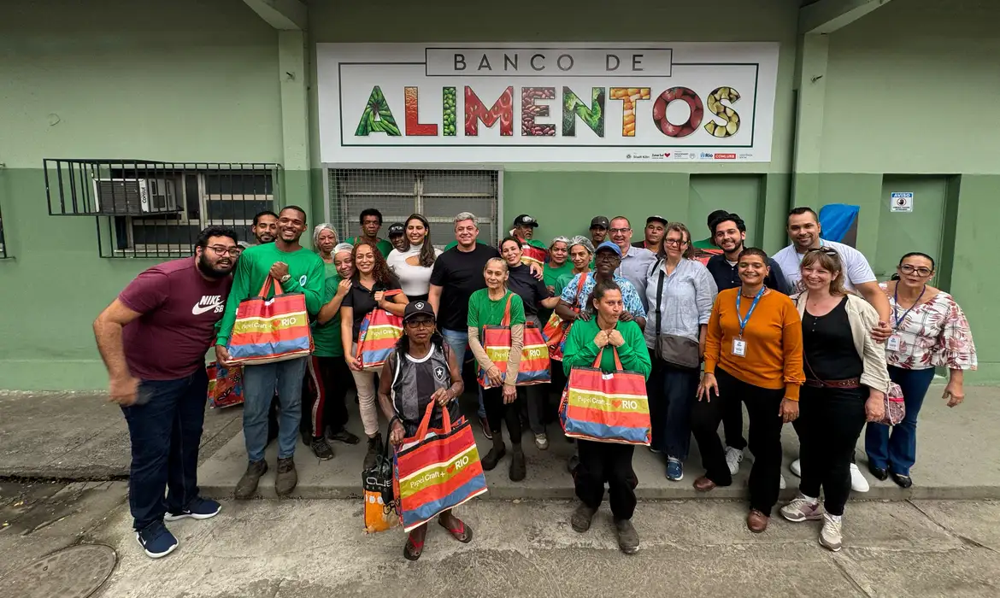
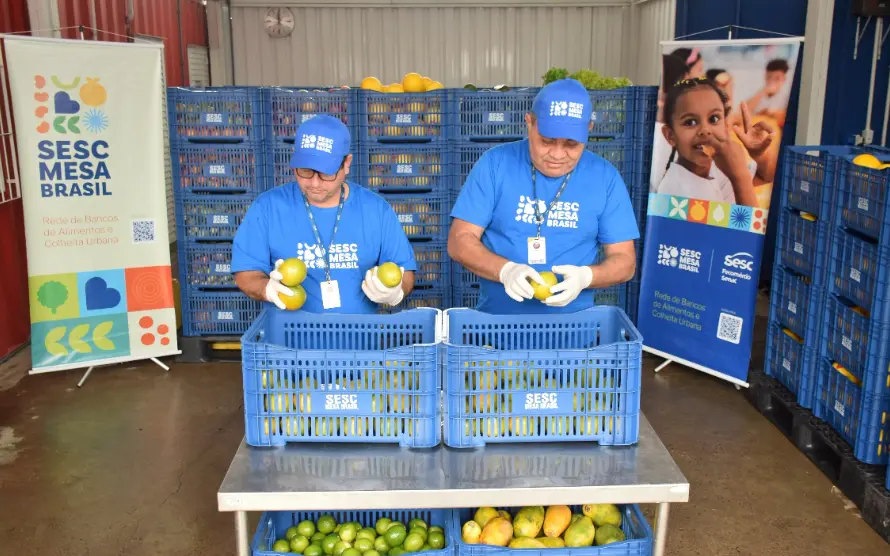
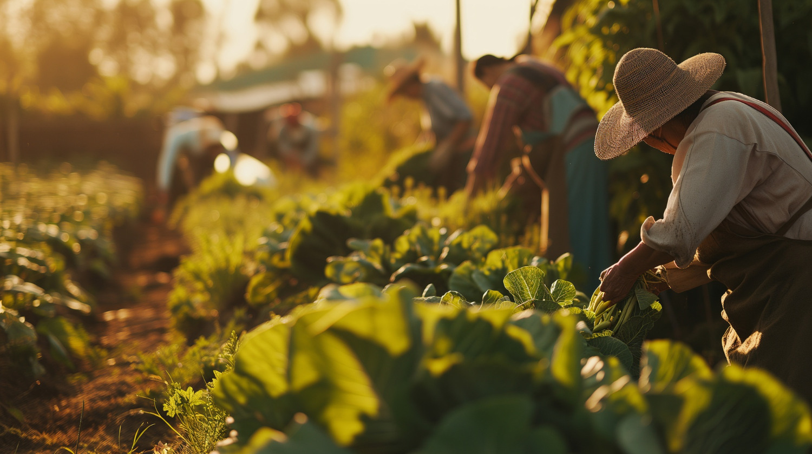

Índice
Informações Extras
Curiosidades, organizações de apoio e formas práticas de ajudar no combate à fome.
Curiosidades
- Curiosidade 1: o Brasil saiu do Mapa da Fome da ONU em 2014, voltou a aparecer nele em 2022 e, segundo a FAO, saiu novamente em 2025.
- Curiosidade 2: grande parte dos alimentos produzidos no país acaba sendo desperdiçada ao longo da cadeia produtiva.
- Curiosidade 3: muitos alimentos descartados por supermercados e feiras — só por estarem "fora do padrão" estético — ainda poderiam ser consumidos com segurança.
Você sabia?
Fatos rápidos sobre alimentação
- O Brasil é um dos maiores produtores de alimentos do mundo, mas ainda enfrenta insegurança alimentar em parte da população.
- Segundo a FAO, cerca de um terço de todo alimento produzido no mundo se perde ou é desperdiçado antes de chegar ao consumidor.
- Cascas, talos e folhas de muitos vegetais são nutritivos e podem ser aproveitados na cozinha, reduzindo o desperdício em casa.
Organizações que ajudam
- Ação da Cidadania — movimento fundado por Betinho em 1993, mobiliza a sociedade civil em campanhas e doações contra a fome.
- Rede PENSSAN — rede de pesquisadores que monitora a insegurança alimentar no Brasil pela Escala Brasileira de Insegurança Alimentar (EBIA).
- FAO Brasil — escritório da Organização das Nações Unidas para a Alimentação e a Agricultura no país, referência em dados e políticas de segurança alimentar.
- Bancos de Alimentos (Mesa Brasil Sesc) — maior rede privada de bancos de alimentos da América Latina, recolhe doações e redistribui a quem precisa.
Como você pode ajudar
- Evitar o desperdício de alimentos em casa, aproveitando cascas, talos e sobras nas refeições;
- Doar alimentos não perecíveis para bancos de alimentos ou instituições da sua região;
- Participar de campanhas solidárias de arrecadação, como mutirões e ações de bairro;
- Incentivar o consumo consciente, comprando só o necessário e valorizando alimentos "feios" ou fora do padrão estético.
"Combater a fome é responsabilidade de toda a sociedade."
Galeria


